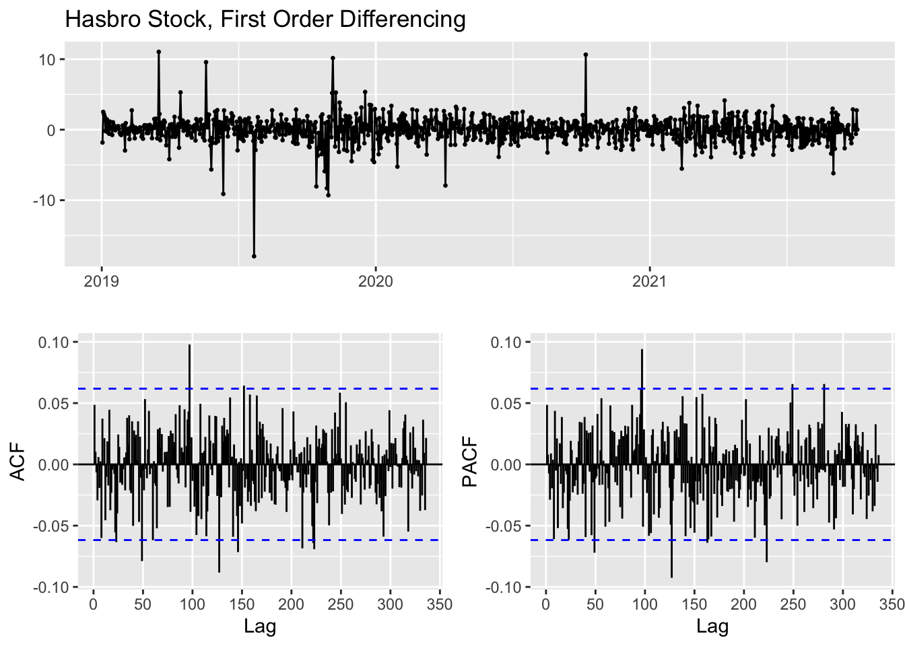
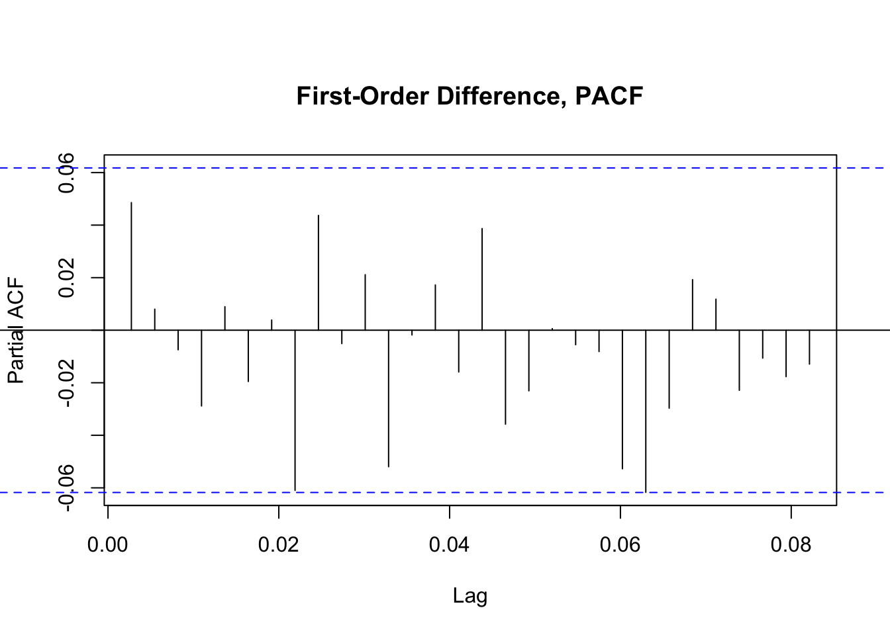
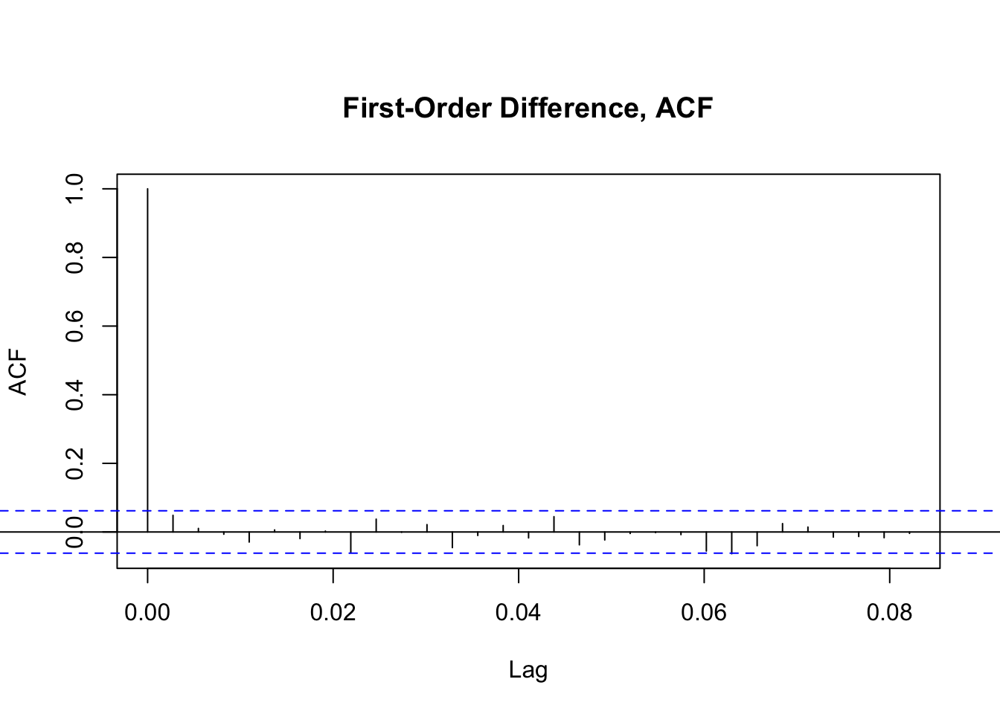
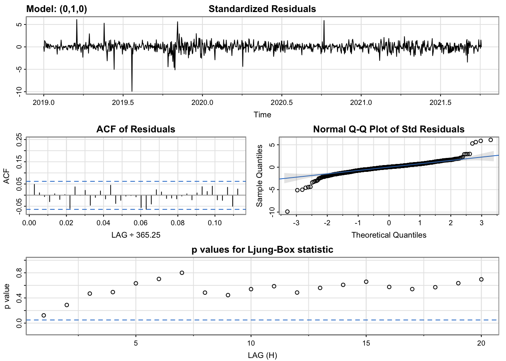
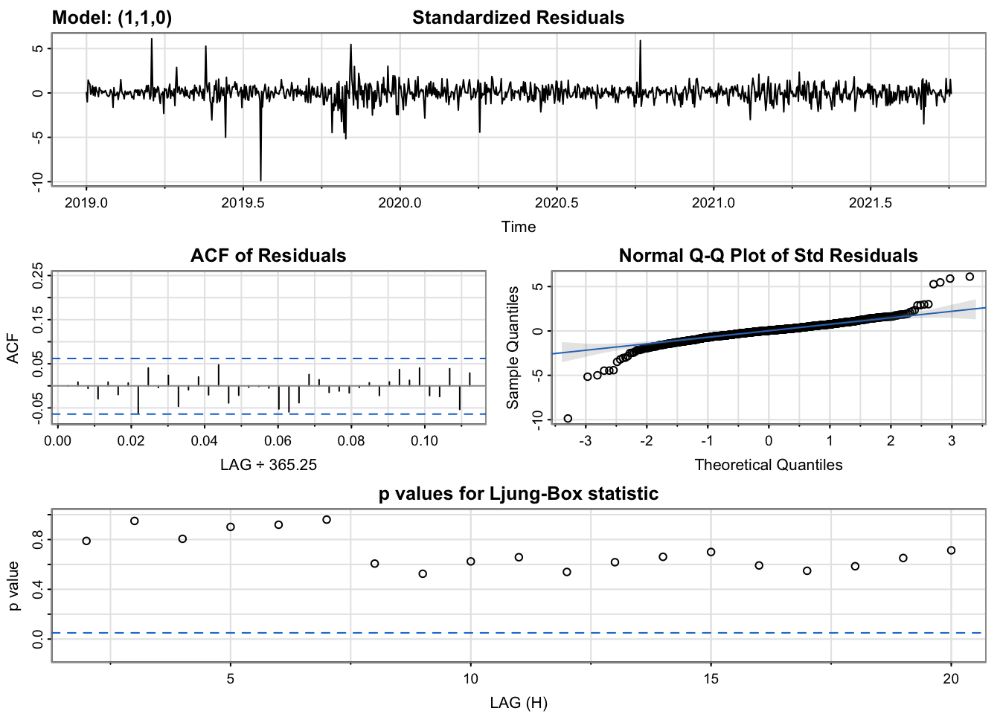
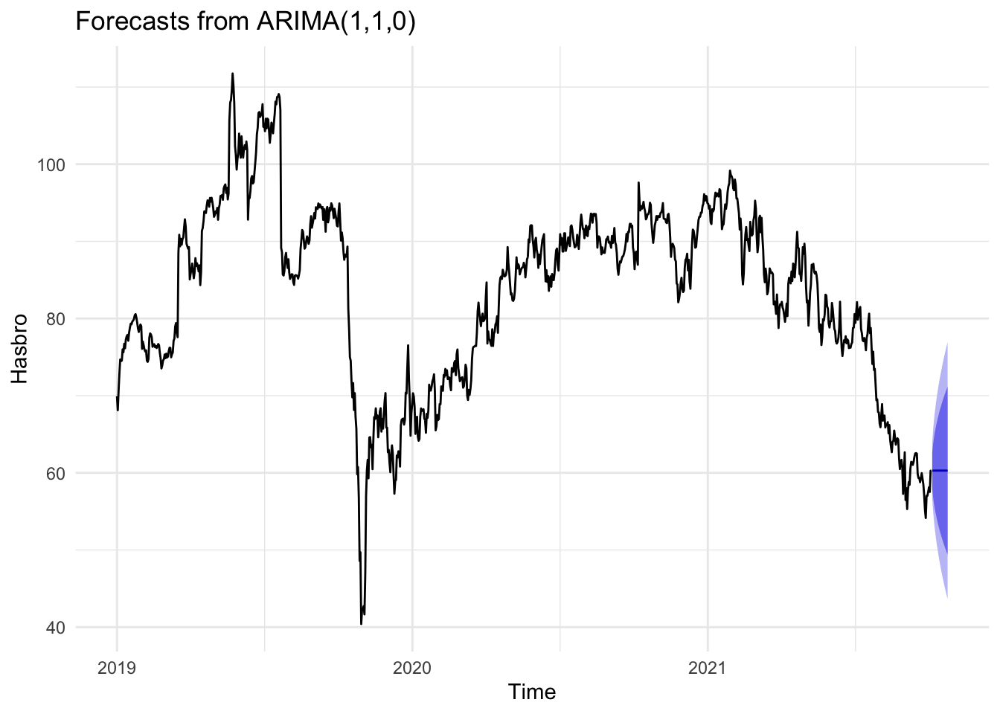
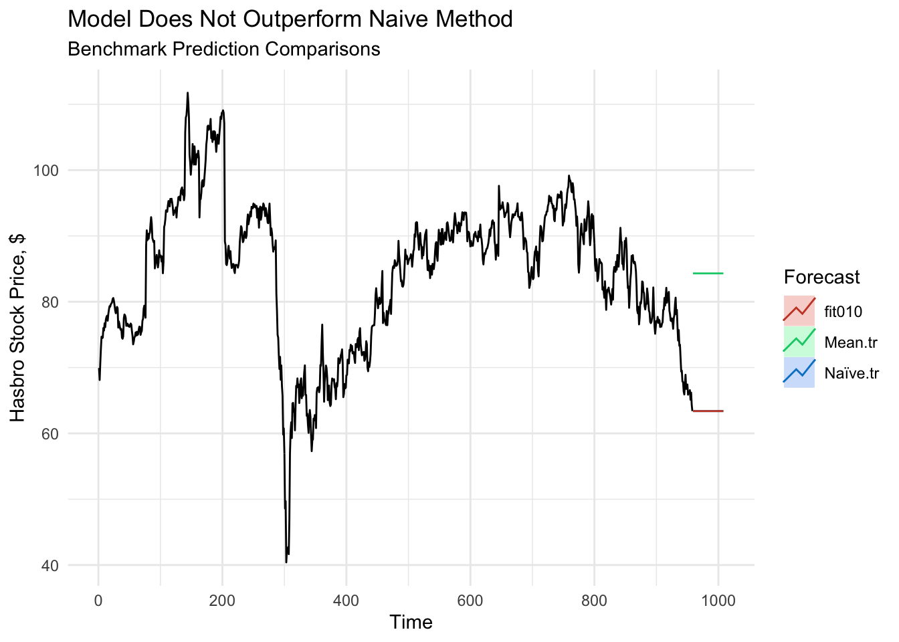

ARMA/ARIMA/SARIMA Models
Having established the rise and fall of Hasbro’s stock price over recent years, our attention now turns to how well the stock’s performance can be modeled and forecast based on only its past values. We first re-evaluate the stationarity of the data before building and evaluating potential models.
Revisiting Stationarity1
From the analysis conducted during the exploratory stage, Hasbro’s stock data has been first-order differenced into a weakly stationary dataset. To confirm this transformation, we consider the ACF plot and Augmented Dickey-Fuller Test results for the differenced time series.

| Dickey-Fuller | -9.55 |
|---|---|
| Lag order | 10 |
| p-value | >0.01 |
| Alternative Hypothesis | stationary |
With a p-value that is statistically significant with a 99% confidence interval, we can proceed under the assumption that the first order difference data is now at least weakly stationary.
Determining Model Parameters
To implement an ARIMA model for predicting time series values, we’ll need to determine how many lags of the stock’s price and how many of the lagged errors to include in the model. These features will reduce the correlation inherent when working with time series data, where each data point is related to or even determined by the former data point. Our stock price certainly fits this definition, where one day’s closing price is often very informative of the next day’s closing price. This reality is particularly true for Hasbro’s price which, while volatile at times, does not move in such drastic price changes as some higher profile stocks.
When evaluating how many past values we should take into account, we consider the PACF plot of the original dataset and use the lags that are statistically significant as potential parameters for the value of p in the ARIMA model.

From the PACF plot of the first-order difference of Hasbro’s stock prices, we see that none of the lags are statistically significant. The first lag seems to be the closest within the first handful of results and thus will be considered in the model, along with 0.
When looking at how many instances of past forecast errors to include in the model, we use the ACF plot and consider the points that are statistically significant.

In the ACF plot of the first-order difference data, we see the first lag is the only statistically significant option, but that the second lag is perhaps worth considering in addition to 0.
ARIMA Model Tuning
With initial parameters selected, we begin building models for each combination of parameters. We’ll then use a number of diagnostic values to determine which model to use in forecasting.
| p | d | q | AIC | BIC | AICc |
|---|---|---|---|---|---|
| 0 | 1 | 0 | 4058.619 | 4063.534 | 4058.623 |
| 0 | 1 | 1 | 4058.285 | 4068.114 | 4058.297 |
| 0 | 1 | 2 | 4060.160 | 4074.905 | 4060.184 |
| 1 | 1 | 0 | 4058.241 | 4068.070 | 4058.253 |
| 1 | 1 | 1 | 4060.197 | 4074.941 | 4060.221 |
| 1 | 1 | 2 | 4062.173 | 4081.832 | 4062.213 |
From considering the AIC and BIC values, two model evaluation measures we seek to minimize, it seems the simplest models perform the best. The model that considers only the differenced data (ARIMA(0,1,0)), essentially making it a random walk model, provides the minimum BIC, while the model that considers the differenced data with a single lag term (ARIMA(1,1,0)) provides the minimum AIC with a slightly higher BIC. Given that both of these models make a logical sense based on the use of financial data, we will proceed in comparing them with further diagnostic analysis.


The diagnostics of the two models are largely the same, as to be expected with their similar AIC and BIC scores. In both, the standardized residuals are largely static and within the same range, with the same dramatic outliers that represent volatile movements in Hasbro’s stock price, such as the impact of COVID-19 and other events. The ACF of the residuals is entirely insignificant. The Q-Q plot of the residuals shows a strong linear patterns with a few extreme outliers at the edges, again representative of the days where large price swings occurred. The p-values of the Ljung-Box statistics, however, are where the models begin to differ, with the second model’s p-values being generally a bit higher, which is desirable in this case. Even so, the first model remains preferable for being the simpler of the two models, since it suggests that just by differencing the data to the first order, we have sufficiently removed the autocorrelation in the time series and thus it may not be necessary to include a lag value at all.
Auto-Arima
| Auto-ARIMA Results | AIC | BIC |
|---|---|---|
| ARIMA(0,1,0) | 4058.62 | 4063.53 |
Without any further parameters provided, the auto.arima function suggests that the random walk ARIMA(0,1,0) model is the best fit and returns the same AIC and BIC as the manually tuned models. Though this process does not always optimize a model perfectly, it is a helpful confirmation of our process in this case and affirms the decision to proceed with the random walk model.
The model of the equation is thus simply:
\[ 𝑋_{𝑖+1} =𝑋_𝑖+ \epsilon_i \]
Forecasting

The shortcoming of the simplicity of the model, then, becomes more apparently in the forecasting process, where each prediction appears to simply be sideways movement of the most recent value. The 80% and 95% confidence intervals are often quite broad, suggesting that within the next month, the stock’s price could move somewhere between $55 and $75, a range that’s roughly one-fourth to one-third of the stock’s price over the course of 2022.
Benchmark Methods
With this rather broad estimation in mind, it is worth considering whether the model can out perform benchmark measures by comparing how well it performs on predicting test data using training data versus how well the mean or naive estimate methods perform in the same context.
| Method | ME | RMSE | MAE | MPE | MAPE | MASE | ACF1 |
|---|---|---|---|---|---|---|---|
| (0,1,0) Model | -0.00676 | 1.8207 | 1.202 | -0.039 | 1.498 | 0.999 | 0.059 |
| Mean | -3.3914 | 11.15 | 8.97 | -2.03 | 11.41 | 7.49 | 0.98 |
| Naive | -0.0684 | 1.8217 | 1.203 | -0.0391 | 1.499 | 1 | 0.059 |

Both the evaluation metrics and plotted forecasting values make it clear that while the model outperforms the mean benchmark (which is inflated by higher values in previous years), it performs almost identically to the naive method benchmark. Given the simplicity of the model, this is not particularly surprising. Without a seasonal component to take into account, the weakly stationary data has a consistent mean and variance, which would in turn lead to a set of predictions that do not vary over the predicted time frame.
Conclusion
We first reestablished the stationarity of the first-order difference of Hasbro’s stock price data. We then used ACF and PACF plots to choose a subset of model parameters. We built a model that used only the differenced data, as it provided the best performance and most intuitive explanation of the data. We then used the model to forecast future stock prices and compared its predictions to benchmark methods. Ultimately, the model proved to perform better than the simple mean method, but only just as well as a naive benchmark method.